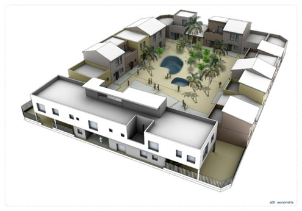
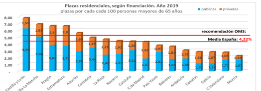

Cohousing, envejeciendo con amigos
La covivienda, también conocida como cohousing, nació en Dinamarca en los años 60. El cohousing es una comunidad colaborativa que forma un vínculo entre la vida privada y la pública, es decir, cada uno tiene un hogar, pero también hay lugares que se comparten, como un lavadero, un comedor, lugares para actividades deportivas... Hay espacios de intimidad e independencia, pero al mismo los compagina con espacios colectivos.
Boceto Alicante Cohousing urbanizaciones. Fuente: Vivienda colaborativa “Cohousing” Al principio, fue considerado un proyecto que sólo llamaría la atención de los jóvenes que quisiesen reducir gastos, pero hoy en día, es una alternativa muy positiva para las personas de la 3º edad, sobre todo en los países nórdicos. En la vejez hay algunas personas que se ven desbordadas por la soledady en caso de tener necesidades especiales que los familiares no pueden cubrir, son enviados a una residencia de ancianos. En estas residencias, no viven de forma independiente, ni son dueños de su tiempo, además, tienen un espacio limitado para desarrollar relaciones con el resto de compañeros.
Los miembros del proyecto covivienda se involucran activamente en su día a día, revelando que existen otros modelos de vida que son aún más sostenibles . Las personas que viven en covivienda tienen el poder de gestionar sus propias vidas y tomar sus propias decisiones, organizándose según sus necesidades. Esto crea la capacidad de ser dueños de sí mismos y podemos resumir esto en un proceso de empoderamiento activo. Es una combinación entre vida en comunidad y vida tradicional . Todos los miembros de la comunidad están involucrados y existen muchos mecanismos de participación, todos los cuales permiten el poder popular y el poder social.
La España envejecida
En el año 2020, la esperanza de vida en España estaba situada en 81,1 años conforme con Eurostat. Teniendo en cuenta los factores migratorios, la tasa de natalidad y la de mortalidad , el pronóstico de Eurostat indica que la esperanza de vida en el año 2100 será de 89,7 años y también la máxima histórica. Estamos en una situación en la que la población joven es cada vez menor y la población mayor crece considerablemente además de que viven más años.
A 1 de enero de 2020, el 19,58% de la población española tenía 65 años o más, es decir, 9.290.866 ciudadanos. Los datos del Instituto Nacional de Estadística (INE) muestran que en provincias como Ourense la población envejecida la forman el 31,49%, seguido por Zamora con un 30,79% y Lugo 29,2%. Sólo en Madrid de sus 6,7 millones de habitantes 1.219.024 superan los 65 años. Las provincias más envejecidas están situadas mayormente en el norte del país, mientras que, en las ciudades autónomas de Ceuta y Melilla, la población envejecida sólo la forman respectivamente el 12,42% y el 11,09%. Con un envejecimiento de la población inminente, es imprescindible discutir sobre nuevos proyectos de vivienda, que sean asequibles y a su vez accesibles.
Residencias insuficientes
España pronto se convertirá en el país de la Unión Europea con mayor proporción de ancianos, las residencias se quedan escasas para un grupo que va en aumento. La Organización Mundial de la Salud recomienda que haya 5 plazas por cada 100 personas. Como podemos apreciar en el siguiente gráfico la media española está en torno a 4 plazas, siendo 5 las comunidades autónomas que llegan o superan la media; Castilla y León, Castilla La Mancha, Aragón, Extremadura y Asturias. En cambio, comunidades como Murcia y Valencia apenas llegan a las 2 plazas por cada 100 personas.
Explicaciones detalladas:
Plazas residenciales en España. Fuente: UDP Según el barómetro-informe personas mayores UDP realizado en 2018, casi la mitad de las personas mayores (45,3%) que conocen el termino cohousing optarían por vivir en uno. A su vez, 4 de cada 6 personas no consideran una probabilidad vivir en una residencia. Diversas encuestas subrayan que las personas mayores prefieren envejecer en una casa propia y en caso de requerir cuidados que sean de manera informal. En definitiva, el envejecimiento de la población va a traer innumerables retos que deben ser solucionados tarde o temprano, empezando con un cambio en la estructura social. El modelo residencial vigente debe entrar en debate y desarrollar un modelo que no se base en la codependencia, sino en la convivencia y en la creación de entornos íntimos.
El reportaje está dividido en 3 puntos distintos, la primera parte sería la explicación del cohousing y sus diferencias con las residencias de ancianos tradicionales. La segunda parte sería un llamamiento al lector para que entienda por qué es importante este tema, con una esperanza de vida que pronto alcanzará máximos históricos, el foco está puesto en los ancianos que ya forman parte del 20% de la población. Mientras que en el último apartado se habla sobre la falta de residencias y las preferencias de las personas de la 3º edad respecto a cómo pasar el resto de sus vidas.
En los 3 apartados se han usado fotografías o gráficos para conseguir la atención del lector. En la primera para que no sólo entienda qué es una covivienda, sino que se la pueda imaginar también. En la segunda parte, tenemos un mapa de España distribuido en colores, muy intuitivo, en el que el azul más oscuro representa los lugares donde la población está más envejecida. En la última parte tenemos un gráfico de barras para que el lector vea el número de residencias por cada 100 habitantes en distintas comunidades autónomas españolas.
Para las fuentes de datos he usado:
El Barómetro-Informe de la Unión Democrática de Pensionistas y Jubilados (UDP) , este informe me ha aportado datos sobre la perspectiva de los señores de más de 65 años respecto al cohousing y sus preferencias en caso de tener que elegir entre una residencia o una covivienda. Este informe se ha realizado mediante una encuesta telefónica a 443 personas distribuidas por todo el país. El gráfico con la comparación de la recomendación de la OMS y la media por cada 100 habitantes de las plazas de residencias también lo he sacado de UDP, pero del siguiente articulo https://www.mayoresudp.org/siguen-faltando-mas-de-70-000-plazas-en-las-residencias-de-personas-mayores/
Los datos que he analizado en el Excel han sido los del INE y Eurostat . Del INE he descargado el padrón municipal del 1 de enero de 2020 dividido en provincias y el porcentaje de personas mayores de 65 años. En la segunda hoja de cálculo, la de los porcentajes, he aplicado las formulas de máximo, mínimo y promedio. Máximo para saber cuál era la provincia con una mayor población envejecida, mínimo para saber qué provincia (en este caso ciudad autónoma) le sucedía justo lo contrario y el promedio para conocer cual es la media nacional. En ese mismo Excel he aplicado el porcentaje de personas mayores de 65 años a la población total de cada provincia. Multiplicando el porcentaje por la población total y dividiéndolo entre 100 para conocer el número de personas exacto, he quitado los decimales y he hecho que Excel lo redondee debido a que no tiene sentido que haya datos en los que diga que hay 10,7 personas porque no estamos refiriéndonos a un objeto.
Eurostat me ha aportado los datos sobre la previsión de esperanza de vida del año 2019 al 2100. En ese apartado he hecho otra vez el mínimo, máximo y el promedio. Para saber en qué años podíamos encontrar los picos y las bajadas. También descargue las previsiones de 2019 a 2100 de la populación del país, aunque finalmente decidí no usarlo porque me parecían demasiados datos.
Los datos son un punto clave en este reportaje, varias bases de datos han sido analizadas y resumidas de manera simple y visual (mediante el gráfico insertado o el mapa) para que el lector pueda comprender y retener lo que acaba de leer. Es por eso, que se han buscado, recopilado y filtrado una gran variedad de datos.
El gráfico interactivo ha sido creado con datos de Eurostat que ha habido que limpiar mediante Open Refine, definiendo una vez más las celdas como “dates” en el caso de los años y “numbers” en el caso de la esperanza de vida en edad. Después el gráfico ha sido creado mediante Datawrapper, la elección ha sido clara, un gráfico de una línea temporal que tiene una tendencia clara, cada vez va aumentando. Se ve la tendencia general, y es posible poder compararla con otros años.